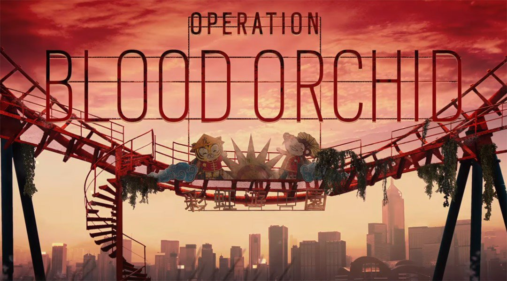
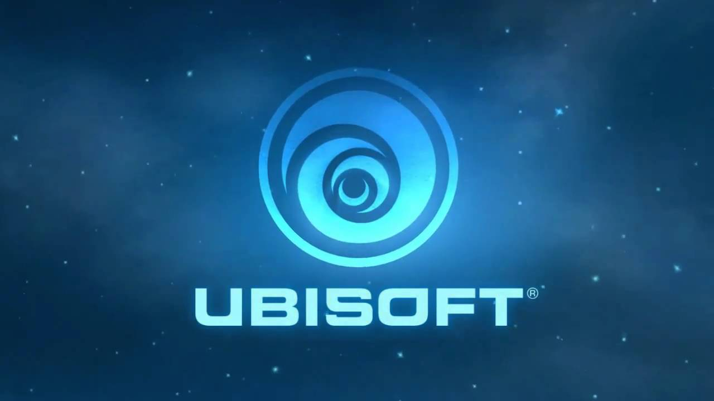
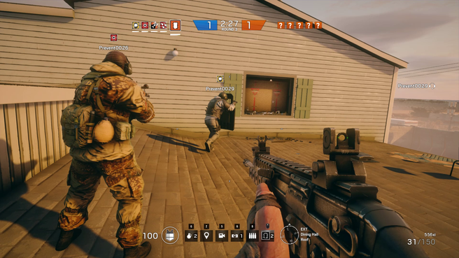

Tom Clancy's Rainbow Six Siege Operation Blood Orchid aangekondigd
Ubisoft heeft de Tom Clancy's Rainbow Six Siege Operation Blood Orchid aangekondigd. De nieuwe update is vanaf 29 augustus te spelen op de PlayStation 4, Xbox One en Windows PC. lees meer

Ubisoft DLC zal niet langer invloed hebben op volledige games
Ontwikkelaar en uitgever Ubisoft heeft te kennen gegeven niet langer downloadbare content uit te brengen die van invloed zijn op de volledige game. Nieuwe Ubisoft DLC zal enkel zijn als uitbreiding voor games. lees meer

Rainbow Six: Siege heeft 2,3 miljoen dagelijkse spelers
Ubisoft kondigt aan dat Rainbow Six: Siege dagelijks 2,3 miljoen spelers trekt. Daarnaast heeft de game in totaal 20 miljoen geregistreerde spelers. De uitgever stelt dat de hoeveelheid spelers nog altijd groeit en het een voornemen is om Siege door te blijven ontwikkelen. lees meer

Minstens 100 Rainbow Six Siege operators
De 5v5 shooter Rainbow Six Siege krijgt in de toekomst mogelijk 100 operators of zelfs meer. Dat heeft Alexandre Remy, merkdirecteur van Rainbow Six, onthuld in een interview met PC Gamer. lees meer